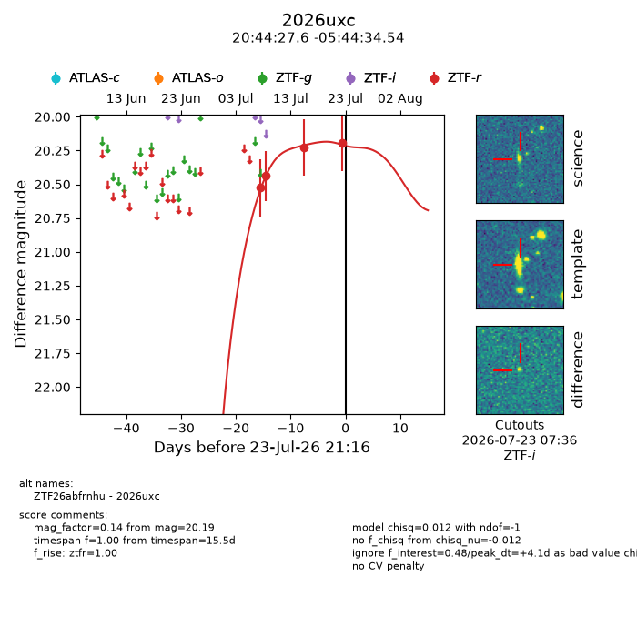
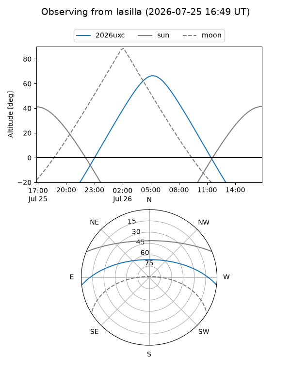
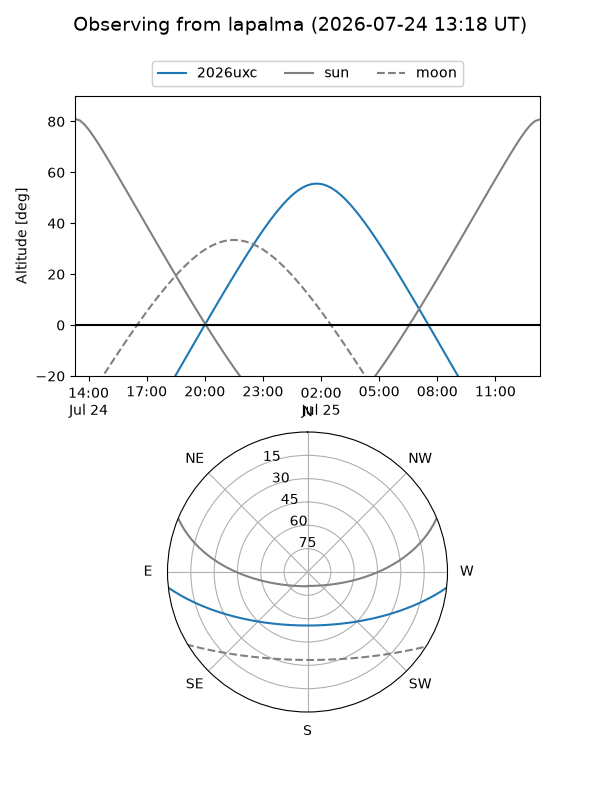
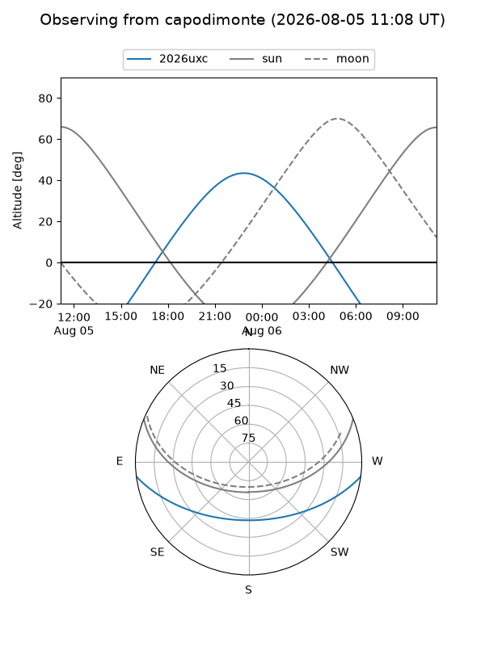
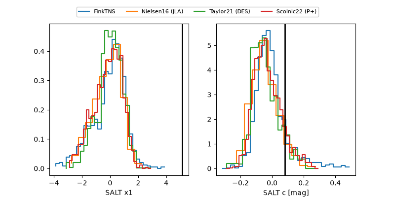

2026uxc
Target 2026uxc at 2026-07-23 21:19
Aliases and brokers:
FINK-ZTF: ztf.fink-portal.org/ZTF26abfrnhu
Lasair-ZTF: lasair-ztf.lsst.ac.uk/objects/ZTF26abfrnhu
ALeRCE-ZTF: alerce.online/object/ZTF26abfrnhu
YSE-PZ: ziggy.ucolick.org/yse/transient_detail/2026uxc
TNS name: wis-tns.org/object/2026uxc
Direct TNS query: direct search
alt names
ZTF26abfrnhu (ztf,fink_ztf)
2026uxc (tns,yse)
Coordinates:
equatorial (ra, dec) = 311.1152,-5.74293
equatorial (HMS+DMS) = 20:44:27.64,-05:44:34.54
galactic (l, b) = (41.0955,-27.69988)
Flags:
TNS type: nan
peak dt: +4.1
Photometry:
last ztfr=20.19
4 ztfr detections
Lightcurve

Visibility



Additional plots
